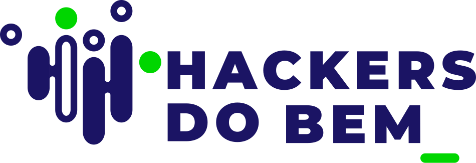

Estudo de Caso: DevSecOps#

Aplicação de conceitos DevOps e DevSecOps em um sistema de gerenciamento de tarefas Flask.
Documentos#
Documento |
Descrição |
|---|---|
Relatório consolidado do estudo de caso |
|
Descrição das etapas do estudo de caso |
|
Ações pendentes e próximos passos |
Etapas#
Repositório do Projeto#
github.com/HDB-ATIVIDADES/Task-Manager-using-Flask
Pipeline CI/CD: GitHub Actions com 8 jobs (build, test, sast, dast, deploy-review, deploy-staging, dast-staging, monitoring).